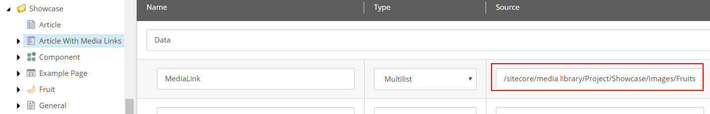

Recommendations: Working with data sources and media
Recommended practices for structuring and naming of data sources and media items
Organizing and naming your data sources and media items wisely can make a world of difference for your editors. This topic describes some best practices for dealing with data sources and media items.
Remove unused site data sources. Keeping unused site data sources in the site introduces the following risks:
Your editors can use them by accident.
Your editors might not be able to find a more suitable piece of content that you intend them to use.
Note
This recommendation applies to site/global/shared data sources and is not necessary for the data sources stored under the Data folder under your page.
The Media folder under sites (sitecore/Content/<site collection>/<site>/Media) is a scoped view of the Media Library items available for the site. You must not upload Media items to this folder. Instead, use the general Media Libary folder (sitecore/Media Library).
Note
From SXA version 1.7 and higher, you cannot upload media items under the Media item of your site.
Always use meaningful names for your data sources that you use across sites. Think of a name that indicates its purpose so that editors can identify and reuse them. A name such as Carousel 1 does not encourage reusability. However, Hero Carousel for Christmas 2018 does.
Note
This recommendation applies to the site/global/shared data sources and is not necessary for the data sources stored under the Data folder under your pages.
Site data folders are expected to host reusable content and it is best practice to keep them uncluttered. Group them in subfolders as required so that your editors can easily locate and repurpose content that is meant to be reusable.
Note
This recommendation applies to site/global/shared data sources and is not necessary for the data sources stored under the Data folder under your page.
Most renderings are designed for reusability and to pull data from data source items. This means that the content they display is not bound to the page that they appear on, but is stored in data source items. The Source field specifies where the user is allowed to look for the data source.
|  |
Setting this location correctly makes selecting data sources much easier because, for example, the Content Editor is directed to a specific site subfolder and does not have to search the whole Media Library for an image. You can set the location manually, use a query, or use the Source field report helper script.